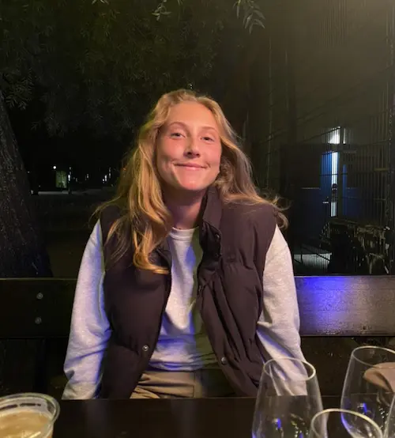

Hvem er jeg?

Cv
Mit Cv indeholder en masse forskellige brancher og grene af arbejde
Køkken
2022-2023 Artist hos Sliders Nørrebro, Københavns Kommune
∙Prepping af madvarer
∙Lave mad til spisende kunder
∙Håndtering af friske råvarer, kød og fisk
Pædagogmedhjælper
2019 - 2022 Pædagogmedhjælper hos børnehaven Himmelrummet, Københavns Kommune
∙ Udvikling af mine færdigheder lært i tidligere job
∙ Udvikling af mine færdigheder under tidspres
∙ Udvikling af børns sproglige, motoriske og relationelle kompetencer.
Frivillig
2020 Frivillig i Kirkens Genbrug, Glostrup
∙ Kassebetjening
∙ Prismærkning af nye varer
∙ Kundebetjening
∙ Udsmykning af butik og vinduesdisplay
Interesser
Mine interesser består af mange forskellige former for kreativitet.
Jeg nyder både at male og lave skulpturel kunst med genstande som ellers ville blive kasseret.
Jeg finder det meget spændende hvordan man kan tage noget der ikke længere ses som brugbar og
derefter give det en ny funktion.